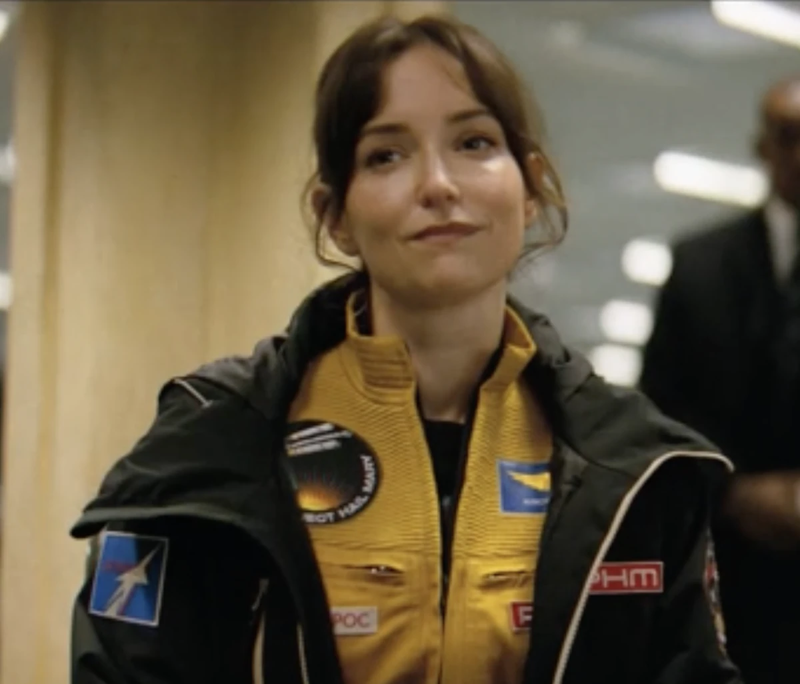

Project Hail Mary
Earth is facing an ice age caused by "Astrophage," an alien microorganism that feeds on the sun’s energy, causing it to dim. The Sun will dim enough to wipe out humanity within 30 years.
The world's governments have appointed former European Space Agency administrator Eva Stratt to lead a task force to solve the problem. Stratt is given full legal imunity and almost unilateral authority.
Project Hail Mary
The Hail Mary spacecraft has been built to find a solution, as Tau Ceti is the only nearby star not affected by the parasite
The Hail Mary will hold a crew of 3 people astronaut and commander Yao Li-Jie, engineer and materials specialist, and Ryland Grace, former molecular biologist (now high school teacher).

Bildet er tatt fra ett eller annet sted på internett.
The Hail Mary
The Hail Mary is a specialized, Astrophage-fueled starship designed for a one-way, last-ditch mission to Tau Ceti to save Earth from a sun-dimming organism.
The vessel is a massive centrifuge, spinning its habitation and fuel sections on cables to create artificial gravity, and features three cylindrical spin drives.

Surprise! Surprise! Dette er også et bilde fra internett!
Key Equipment
Propulsion:
The ship is powered by Astrophage, an alien organism that converts mass directly into energy.Beetles:
Unmanned mini-ships intended to carry findings back to Earth.Laboratory:
Contains extensive lab equipment needed for scientific research.Automation:
The ship is highly automated.The Crew of the Hail Mary
-
Commander Yao Li-Jie

Yáo Li-Jie is the commander of the ship he is from the Chinese space program.
-
Olesya Ilyukhina

Olesya is the materials specialist and engineer on the primary crew of the Hail Mary.
-
Ryland Grace

Ryland is a former molecular biologist, now science teacher. He is the new designated science specialist after Martin DuBois died prior to take off.